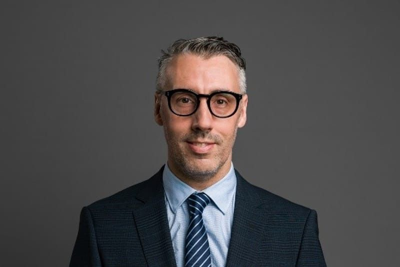

Martín Inthamoussu
Martín Inthamoussu es gestor cultural, coreógrafo, docente e investigador uruguayo. Es doctorando en Desarrollo Inclusivo y Sostenible en la Universidad Loyola Andalucía y magíster en Comunicación y MBA por la Universidad Católica del Uruguay. Fue seleccionado como Yale World Fellow y realizó el programa de gestión de las artes del DeVos Institute.
Actualmente es curador adjunto del Programa de Arte del Banco Mundial. Fue consultor del Banco Interamericano de Desarrollo y presidente del SODRE en Uruguay, y desarrolla su actividad docente en la Universidad Católica del Uruguay. Sus líneas de investigación articulan la cultura y el desarrollo sostenible en el MERCOSUR, las políticas culturales, la economía creativa y la gestión de las artes. Entre sus publicaciones destacan Políticas públicas para las industrias culturales y creativas: de la teoría a la práctica (BID, 2024) e Industrias creativas y patrimonio: manual de políticas para la gestión sostenible (BID, 2025).